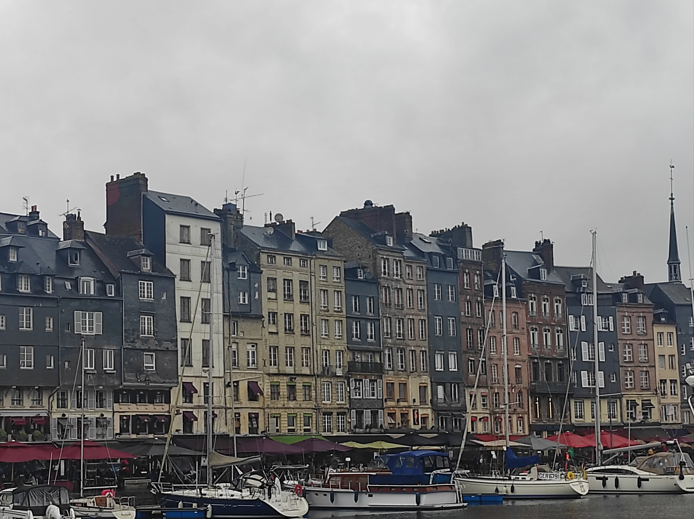

August 4th 2023 was my D-Day aka the first time I travelled properly through Normandie after having lived in France for over two years. Before that I only managed to spend a weekend back in 2012 when I went there with a good friend of mine who was also living in Paris at that time. Since we were both short of money and we did not know exactly where we were heading to, we decided to stop in Villers-sur-mer and sleep on the beach. At a certain time during the night we were surrounded by a gang of youngster and were asked by a guy bleeding from the face if we accidentally bumped into his friends. After a while we decided to move more in the city center because we did not feel safe and after we were able to fall asleep again on another bench we found, a local baker started to throw pieces of bread at us during his shift, probably because that day he wasn't having enough fun.
All those surreal situations my friend and I ended up into really made me feel like I was part of one of those beautiful ironic Kaurismaki's movies, in particular one that is in fact called Le Havre, a city that we had the chance to visit briefly during the same weekend.

Normandie is very cinematic and while you are here you can feel like you are part of one of the brilliant pictures of Jean Paul Belmondo. In particular my favourite ones are A Monkey in the Winter and Pierrot le Fou. Regarding the second one, although the movie has been filmed in the south of France, its focus is mostly on the use of colours. Blue, white and red (french national flag?) in particular are giving to the movie a very unique flair.
The weather is Normandie is obviously "very Atlantic" so-to-say. Clouds are heavy, dark and fast and at some point you would expect airplanes coming to change the course of history anytime, while fishermen are cursing the exhaustion caused by hard working, bending down to bring the fishnets back from the ocean, while the ocean is moving back and forth like a beast hard to catch, clashing pitiless on the rocks, showing that water is stronger than rock and it can shape it anytime it wants.
One of the most picturesque town I have seen on that trip, it is the town of Honefleur. The city is the home town of one of the most important composer of the XIX century and according to someone the inventor of ambient music, Erik Satie.

Satie lived a very modest life, he never got married and for most of his lifetime lived in a small room in the city of Paris. His native house in Honefleur is open to visitors and from the outside looks like a very inspiring place for artists, a sort of a dream house in a dream town. I also personally consider Satie as one of the musicians who inspired some of the modern artists like Yann Tiersen.
Driving around with Andrea and Christine reminded me on how much I love road-tripping and the sense of vulnerability I get from that. It makes me somehow feel more human and it detaches me from the usual routine which I believe is bad for the soul and makes days run too fast. We ate regularly the classic normandic combo, galette & cidre and joined a local rainy cider folk fest with swing live music. We woke up the morning after in the forest with an headache that was hard to get rid of while our journey (or mine atleast) was coming to an end in the next few days in St. Malo.